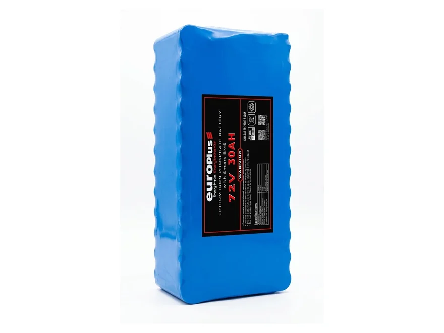
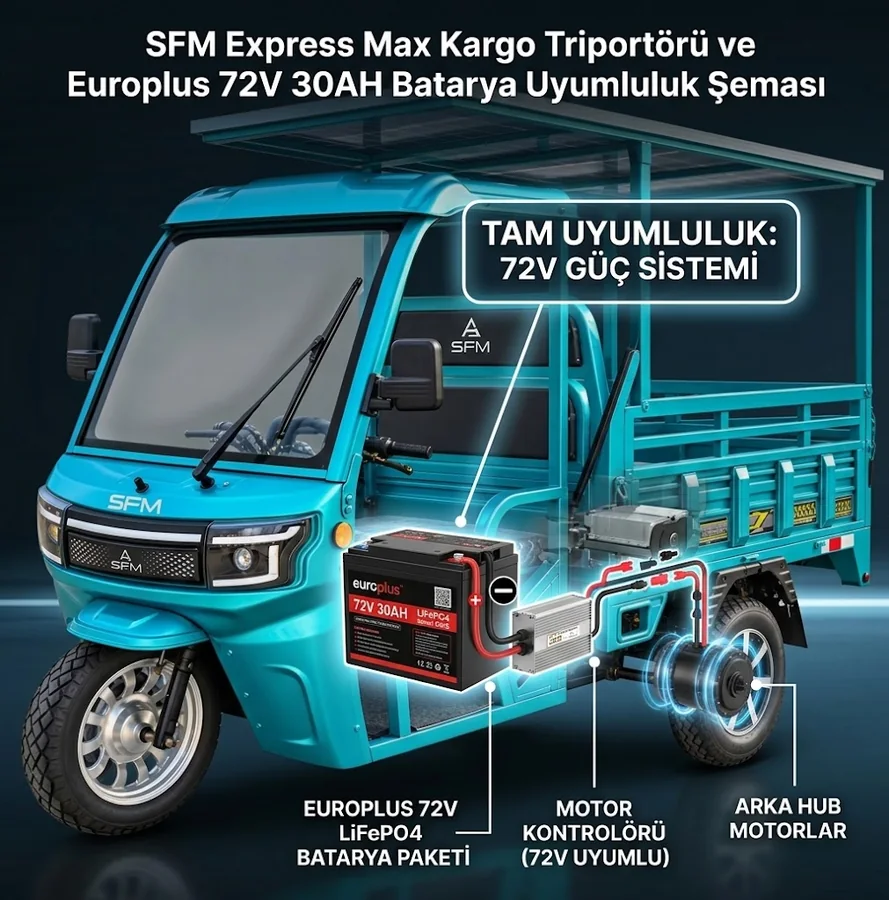

{kind=link}
{kind=link}
3.000 – 6.000 döngü
Üreticinin künyesindeki çevrim ömrü. Jel akülerin tipik ömrünün kat kat üzerindedir; akü değiştirme sıklığı düşer.

Elektrikli triportörünüzün jel akü grubunun yerine takılan LiFePO₄ çekiş aküsü. Daha hafif, çok daha uzun ömürlü ve deşarj boyunca voltajı kararlı — akü boşalırken motor gücü düşmez.
₺28.000 ≈ $589
KDV dahil fiyattır.
💰 Havale/EFT ile: ₺27.150
Elektrikli triportörlerin çoğu jel ya da sulu kurşun-asit akü grubuyla gelir. Bu akü tipleri ucuzdur ama ağırdır, birkaç yüz döngüde kapasitesini kaybeder ve yarıdan sonra voltajı düştüğü için aracın gücü gözle görülür biçimde azalır.
LiFePO₄ (lityum demir fosfat) kimyası bu üç sorunu da çözer: aynı enerjiyi çok daha hafif bir gövdede taşır, üreticinin künyesine göre 3.000 – 6.000 şarj döngüsü dayanır ve deşarj boyunca voltajı kararlı kalır — akü boşalırken motor gücü düşmez.
24S dizilimli bu paket 72,0 V nominal gerilimde 30 Ah kapasite, yani yaklaşık 2.160 Wh enerji verir. İçinde balanslı bir BMS (akü yönetim sistemi) vardır: hücreleri dengeler, aşırı şarj, aşırı deşarj ve kısa devreye karşı korur.
Şarj cihazı ürüne dahil değildir. Uygun cihaz LiFePO₄ uyumlu CC/CV tiptedir; şarj voltajı yaklaşık 83,95 V, önerilen şarj akımı 6–10 A'dir. Jel akü için kullandığınız eski şarj cihazı bu aküyü doğru doldurmaz.

| Nominal voltaj | 72,0 V |
| Kapasite | 30 Ah |
| Enerji | Yaklaşık 2.160 Wh |
| Hücre dizilimi | 24S |
| Kimya | LiFePO₄ (lityum demir fosfat) |
| Tam dolu voltaj | Yaklaşık 83,95 V |
| Deşarj kesme voltajı | Yaklaşık 54 V |
| Koruma | Dahili balanslı BMS |
| Çevrim ömrü | 3.000 – 6.000 döngü |
| Şarj cihazı (dahil değil) | LiFePO₄ uyumlu CC/CV · ~83,95 V · 6–10 A |
Değerler üreticinin künyesinden alınmıştır.
Aynı 72 V sistemde jel akünün yerine takılır; fark ömürde, ağırlıkta ve sürüş hissinde ortaya çıkar.
Üreticinin künyesindeki çevrim ömrü. Jel akülerin tipik ömrünün kat kat üzerindedir; akü değiştirme sıklığı düşer.
Aynı enerjiyi taşıyan jel akü grubuna göre belirgin biçimde hafiftir — araçta taşınan ölü ağırlık azalır.
LiFePO₄ deşarj boyunca voltajını korur. Akü yarılandığında motor gücü düşmez, yokuşta zorlanmazsınız.
Panelden 72 V akü grubuna doğrudan şarj için hazır paketlerimize bakın.
Evet, 72 V sistemlerde jel veya kurşun-asit akü grubunun yerine takılır. Şarj cihazının LiFePO₄ uyumlu (CC/CV, ~83,95 V) olması gerekir; eski jel şarj cihazı bu aküyü doğru doldurmaz.
Menzil aracın motor gücüne, yüküne, lastik basıncına ve yol eğimine göre değişir; bu yüzden kesin bir kilometre yazmıyoruz. Elimizdeki kesin değer enerjidir: 72 V × 30 Ah ≈ 2.160 Wh. Aracınızın tüketimini biliyorsanız birlikte hesaplayabiliriz.
Hayır, akü tek başına satılır. Uygun şarj cihazı LiFePO₄ uyumlu CC/CV tiptedir: şarj voltajı ~83,95 V, önerilen şarj akımı 6–10 A. Mevcut cihazınızın uygun olup olmadığını sipariş öncesi birlikte kontrol edebiliriz.
Üreticinin künyesinde 3.000 – 6.000 şarj döngüsü verilir. Günde bir tam döngüyle bu, jel akülerin tipik ömrünün kat kat üzerindedir; kullanım yoğunluğuna göre değişir.
Evet. Panelden 72 V akü grubuna doğrudan şarj için BOOST MPPT 24–72 V şarj kontrol cihazını kullanıyoruz; hazır motor güneş paketlerimizde de bu cihaz var.
24, 36, 48 ve 60 V sistemler için de akü tedarik ediyoruz; stok ve fiyat için bize yazın.
Stok ve teslimat için WhatsApp'tan yazın; aynı gün dönüş yapıyoruz.